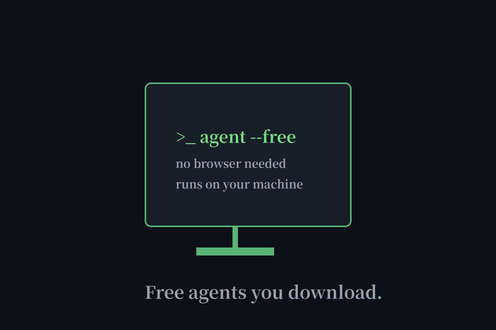

Free AI Desktop Agents You Can Download: AgentOne vs OpenClaw (2026)
Our directory is built on a simple idea: the best free AI agent is the one you can use without signing up. But some agents are worth downloading — they run on your machine, work offline-ish, and answer to nobody's cloud. We verified the two most credible free desktop agents against their official docs. They take opposite approaches to "free," and both are honest about it.

| AgentOne | OpenClaw | |
|---|---|---|
| Free? | Yes — $0/mo "free forever", no card | Yes — MIT, no paid tier exists |
| Account needed? | No — usable without one | No (but you bring a model) |
| The catch | 100 credits/month for built-in models | You supply the API key or local model |
| Platforms | Windows, macOS, Linux | Runs anywhere Node.js does |
| License | AGPL-3.0 (desktop app) | MIT |
AgentOne: free credits, no account
AgentOne is the rare desktop agent that treats "free" the way we do: $0 a month, free forever, no credit card — and per its own FAQ, you can use it without an account. The free tier includes 100 credits a month for AgentOne's hosted built-in models, all extensions, and core features. When the credits run out, you either upgrade or bring your own key (OpenRouter, Groq, Google, Cerebras supported) or point it at local Ollama/LM Studio models for the truly keyless route we mapped in our no-API-key test. The desktop app is AGPL open-source, runs on Windows, macOS, and Linux, and is pitched at non-technical users — the closest thing to a "just download it" free agent we've verified.
OpenClaw: free software, bring your own brain
OpenClaw (392k GitHub stars, MIT license, maintained by a nonprofit foundation) takes the opposite deal: the software is completely free — its README states flatly "has no paid tier, hosted service, or token" — but there's no built-in model at all. You supply intelligence: an API key from any of ~70 supported providers, an existing Claude Code or Codex subscription login, or free local models via Ollama. Its killer feature is messaging-based automation: a local gateway connects 30+ chat channels — Telegram, WhatsApp, Discord, Slack, Signal, iMessage, LINE, QQ, even WeChat — so you command the assistant from the messaging apps you already live in. Setup needs Node.js and a background service; the docs are upfront that inbound messages are treated as untrusted input (prompt-injection aware) and strangers need pairing-code approval. For tinkerers, it's the most powerful free option. For everyone else, it's homework.
Which one should you download?
Want something working in five minutes with zero account? AgentOne — the 100 monthly credits cover casual use, and local models remove even that ceiling. Want a messaging-controlled automation hub and don't mind setup? OpenClaw — free forever in the strongest sense, because there's no vendor to take it away. Pair either with a free API tier from our free APIs page and the "catch" column shrinks further. Prefer zero downloads entirely? Our no-signup directory remains the fastest path — no install, no account, just a browser tab.
FAQ
Is there a free AI desktop agent?
Yes, two verified options: AgentOne is free forever with no account required (100 credits/month for built-in models), and OpenClaw is MIT open-source with no paid tier at all — but you bring your own model via API key or local Ollama.
Does AgentOne require an account?
No. AgentOne's official FAQ states you can use it without an account. An account is only needed for chat sync and device authorization. The free tier needs no credit card.
Is OpenClaw really free?
The software is — MIT licensed, no paid tier, no hosted service, no token. But it needs AI model access: your own API key, an existing Claude Code/Codex subscription, or free local models via Ollama. Inference costs are yours.
What is messaging-based automation in OpenClaw?
OpenClaw runs a local gateway connecting 30+ chat channels — Telegram, WhatsApp, Discord, Slack, Signal, iMessage, LINE, QQ, WeChat and more — so you control the AI assistant by messaging it from the apps you already use.